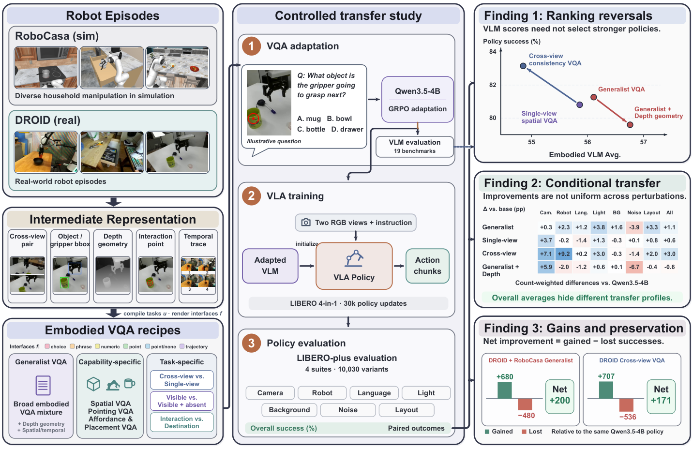
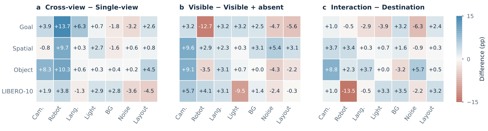

Episode → evidence
Read simulator state, or recover objects, gripper tracks and synchronized views from real recordings.
Gₑ = Fₛ(eₛ)Revisiting Embodied VQA for VLA Models
Better visual answers do not always make better robot policies. We study what to teach, where episodes come from, and how answers are presented before a VLM learns to act.
83.16% policy success +2.96 pp vs baseline ↗Embodied VQA is widely used to prepare vision-language backbones for robot control. But which supervision actually transfers? We build an automatic episode-to-VQA pipeline and compare adapted backbones under a common VLA protocol. The resulting policies reveal ranking reversals, condition-dependent gains, and the importance of preserving existing successes.
Separate episode extraction, the supervised target, and the answer interface to study each supervision choice.
Read simulator state, or recover objects, gripper tracks and synchronized views from real recordings.
Gₑ = Fₛ(eₛ)Specify the entity, event, time and views. Compute the task target from the episode’s intermediate representation.
(x, c, z) = Cᵤ(Gₑ)Present the question with its answer interface and task-specific verifier for VLM adaptation.
(q, ρ) = Rf(u, c, z)
Cross-view consistency reaches 83.16% overall success under the shared VLA protocol—the highest overall score among the 11 initializations shown here.
Change in percentage points (pp)
Chart: Table 2 scores and differences rounded to 0.1; the overall headline uses the paper’s two-decimal result. All 11 initializations share the same policy protocol. Full table, including published expert VLAs ↗
The mismatch appears when changing the views, source episodes, or answer interface.
Cross-view supervision improves robot-state robustness in all four suites. Generalist VQA leads language, lighting, background and layout in the main comparison.
Recipes with similar numbers of gained successes differ in how many existing successes they lose. Net improvement is gained minus lost successes.
At the same Generalist question budget, the DROID + RoboCasa mixture reaches 82.19%, compared with 81.27% for RoboCasa alone.

Explore two executed demo episodes: the video, extracted IR, task targets, and generated VQA. All examples below come from saved pipeline outputs.
Watch. Pause. Point. Discover what one episode can teach.
Select DROID or RoboCasa above. Either is ready to explore.
Change source ↑At each stop, watch Raw → IR → VQA unfold. The robot then asks a question.
Point: click the target.
Choice: select an option.
Trajectory: click 2+ ordered waypoints in Input 1; use Undo point to adjust.
Press Submit answer. Feedback lasts 2.5 seconds, then playback resumes automatically. Choose Hold feedback to take more time.
Explore: Raw / Show IR compares the image and evidence. Skip animation goes straight to the question. × exits the interactive video.
Click the video to play or pause. Scrub to any frame; IR follows the playhead. Depth comparison pauses at a rendered frame.
Selected frames are shown here; episode extraction processes the complete sequence.
Episode evidence, task semantics, and answer serialization are separate parts of the construction.
DROID uses recovered tracks and geometry; RoboCasa uses recorded simulator states. Each route provides the evidence needed to build its supported tasks.
The demo’s common task layer stores choice, point, point_or_no_object and traj2d targets before rendering their answers.
New task builders can reuse saved IR. Model-specific renderers and training adapters can be added without repeating episode extraction.
This release demonstrates two source adapters and a shared task-target layer. A general-purpose robotics interchange standard is a future direction.
Paper results are reproduced from the supplied manuscript. Episode demonstrations are separately executed pipeline examples, not the aggregate training dataset. DROID and NVIDIA kitchen demonstrations are distributed under their respective dataset terms (CC BY 4.0). See the linked sources for attribution.